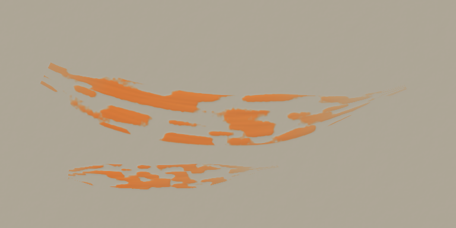
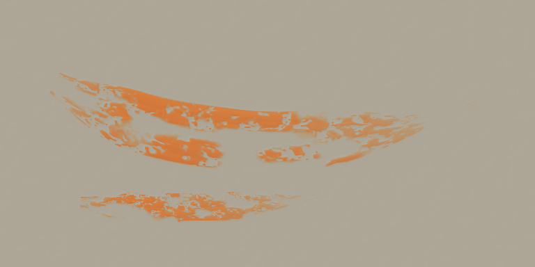
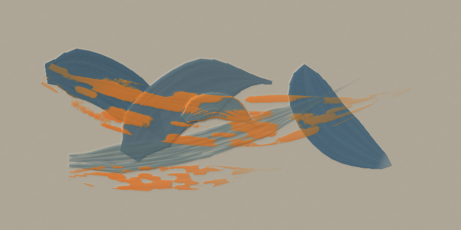
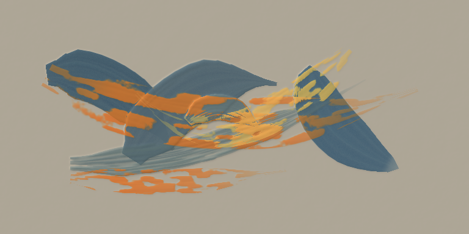
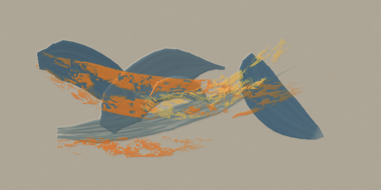

Scumble only · mixed contact sizes Solid patches, medium contacts, smaller catches, ragged interruptions and short connections.
Flat ground · broad and narrow widths 
dev.5 · previous scumble 
dev.6 · refined scumble Irregular dry underpainting · identical starting paint planes 
dev.5 · previous scumble dev.6 · refined scumble Crossing pass · deposits catch earlier scumble and underpaint 
dev.5 · previous scumble 
dev.6 · refined scumble Three 768 px comparisons; the original 384 px renders, unlit/height views, documents and hashes are also saved here.Runtime and preservation checks · Shared underpainting before scumble